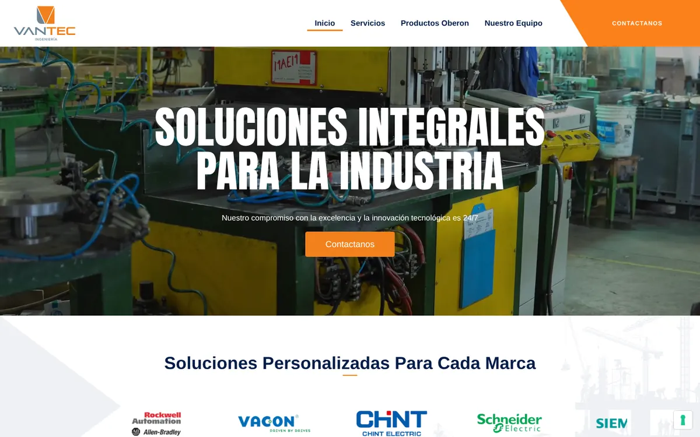
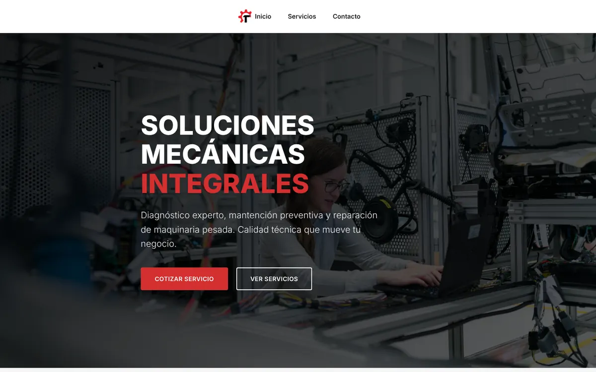

Bioquote
Sistema de gestión para una software factory: cotiza proyectos, los ejecuta con kanban de tareas, hace seguimiento comercial (CRM) y controla las finanzas de la empresa.
Frontend Developer y Analista Desarrollador. Transformo requerimientos de negocio en interfaces web claras, mantenibles y centradas en las personas.
Cada proyecto tiene una demo navegable con datos ficticios: puedes recorrer las pantallas sin crear cuenta ni iniciar sesión.
Sistema de gestión para una software factory: cotiza proyectos, los ejecuta con kanban de tareas, hace seguimiento comercial (CRM) y controla las finanzas de la empresa.
Reportería de rendimiento para una agencia de marketing en EE.UU.: une inversión de Meta Ads con los leads de GoHighLevel y RedTrack, con una vista para el cliente y otra para el equipo interno.
Sitio corporativo de mi empresa de software: propuesta de valor, calculadora de ineficiencia, casos de estudio, blog y contacto.
Las demos usan datos inventados y se ejecutan solo en tu navegador: puedes crear, editar y mover elementos, y todo vuelve a su estado inicial al recargar.
Participé en el desarrollo de estos sitios como freelance, contratado por proyecto.

Empresa de ingeniería industrial del sur de Chile. Sitio corporativo con servicios (electricidad industrial, calibración, proyectos ATEX), catálogo de productos, equipo y contacto.
vantec.cl ↗
Taller de soluciones mecánicas y maquinaria pesada. Landing de servicios con formulario de contacto que registra las solicitudes en base de datos, preparado para hosting compartido.
trimecchile.com ↗Desarrollo, equipos y clientes en sectores como retail, minería y educación.
Desarrollo y liderazgo técnico de proyectos frontend para clientes de Latinoamérica y Estados Unidos. Colaboración con diseño, backend y producto, y comunicación con clientes sobre alcance y entregas. JavaScript, Vue.js, HTML, CSS, Bootstrap, Liquid y Modyo CMS.
Desarrollo de soluciones web para retail y minería con JavaScript, PHP, HTML, CSS, Bootstrap y React Native. Coordinación operativa de contratos, documentación y reportabilidad para servicios asociados a Codelco.
Revisión de código y buenas prácticas, acompañamiento en proyectos web y coordinación de equipos y procesos. Coordinación de carrera desde agosto de 2024 hasta julio de 2026.
Soporte de sistemas, resolución de incidencias, integraciones con SAP Business One y coordinación de equipos técnicos en renovación tecnológica para el Poder Judicial.
Soy Ingeniero en Informática de Duoc UC (2015–2019). Mi trayectoria combina desarrollo web, coordinación técnica y comunicación con clientes: una perspectiva útil para conectar lo que necesita el negocio con lo que construye el equipo.
Busco oportunidades como Frontend Developer o Analista Desarrollador, en modalidad remota desde Chile.
Disponible para oportunidades remotas de desarrollo frontend y análisis de software, incluyendo trabajo por proyecto.